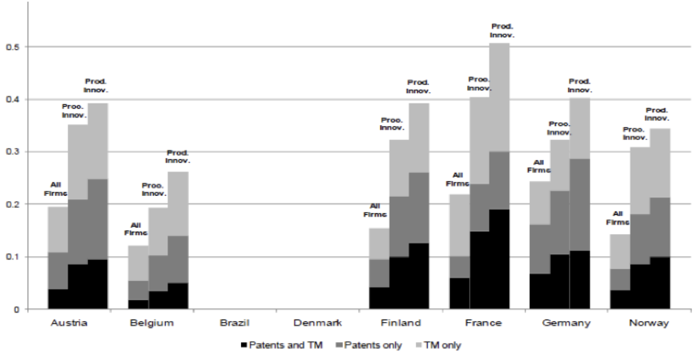
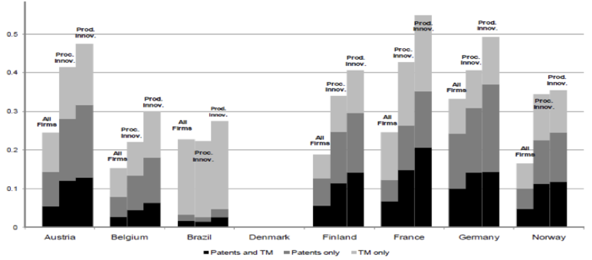
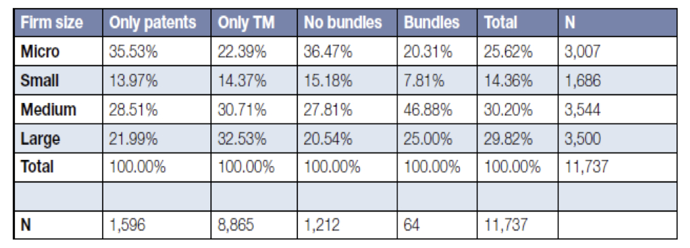
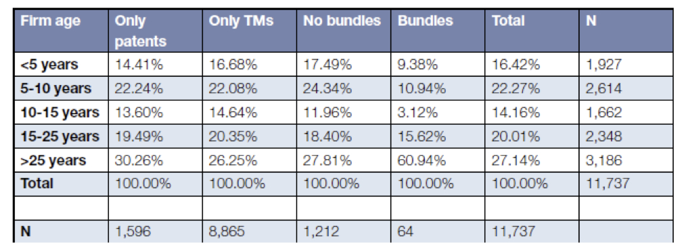
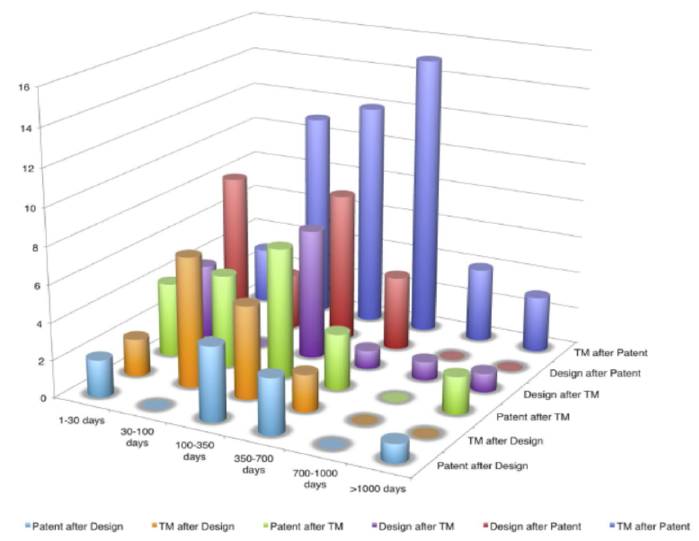

Combined uses of IP
It is not uncommon to see different types of IP rights being jointly used by firms. Depending on the industry and size of a firm, IP rights are increasingly being used in bundles. Bringing new products to the markets can require strategic use of multiple IP rights that are complementary to each other. The empirical evidence points to the synergistic role of combined use of IP rights across firms.
What is meant by the combined use of IP?
Combined use of IP refers to “the use of different types of IP rights to get legal protection for different elements of a single product.
The way in which different IP rights are combined depends on the firm, the industry in which it operates and the type of product or service it provides. While a high-tech firm may rely on a combination of patents, registered designs, trademarks and trade secrets, a web designer may have the option of choosing from copyright, trademark, and database protection, among others. Firms may also accumulate goodwill and build reputation for their product during the time the underlying patent is valid, after which they will reap benefits on the basis of the brand value and recognition thanks to trademark protection. Apple’s iPhone is a good example of such use.
How does the combined use of IP relate to innovation?
Different IP rights serve different purposes because of the protection they grant in different subject matter. Often firms not only seek IP rights for the technological invention underlying their product and protection of the creativity in the choice and arrangement of the product components, they further want to differentiate their products by distinguishing them from competing products in the specific market. Therefore they often use multiple IP rights to protect their assets against imitation or nonconsensual use. For instance, the combined use of patents and trademarks might provide firms with better protection for their invention and thus serve as adequate incentive for engaging in innovation activities than if they sought only patents or trademarks. James Dyson’s vacuum cleaner is an example of successful deployment of a three-track IP strategy in which the innovative product’s appeal was enhanced by the use of patents, industrial designs and trademark.
However, there are cases where the combined use can weaken the access to knowledge and diffusion (see Access to knowledge and inventions [1]). To illustrate, consider a hypothetical IT firm that can protect its brand name through a trademark, its overall product by a patent, the source code of the underlying software using copyright, while keeping the manufacturing process a trade secret. Coca Cola is an example of successful use of a trademark in congruence with a trade secret. Another question arises if trademarks are used to prolong the returns from expired patents, particularly if combined with trade secrets that prevent competitors from effectively entering the market and preserve monopoly returns to the incumbent.
Evidence on the combined use of IP
Several studies have found firms use different types of IP rights as substitutes or complements. Levin et al. (1987) found that “other means of appropriation are typically more important than the patent system.” They find that sole patent protection is often important in only a few industries, most notably pharmaceuticals (although the importance of trademarks should not be underestimated). Regarding alternative forms of protection, Arora (1995) has shown how chemical firms use patents and trade secrets to protect various different elements of the firms’ value chains. Graham and Somaya (2006) found empirical evidence for complementarity in the leveraging of copyrights and trademarks by computer software firms stemming from common indivisible inputs in IP strategies such as managerial attention and organizational resources.
Parchomovsky and Siegelman (2002) show that combinations of IP protection give rise to important synergies since “when a patentee can develop brand loyalty among its customers, the existence of trademark protection allows her to extend its protection even after her patent expires, and thereby earn higher profits than would be possible without such leverage.” Figures 1 and 2 show the share of firms using both patents and trademarks as well as those using only patents or trademarks.
Figure 1: Propensities to use IPRs (patents and trademarks), all core industries

Source: OECD/ Millot (2009) with data from respective national innovation surveys 2002/2004 (except for Austria, 1998/2000)
Note: Propensity to use patent and/or trademarks by firms (doing product innovation and process innovation) in all core industries. Based on the results of the Fourth Community Innovation Survey (CIS 4)
Figure 2: Propensities to use IPRs (patents and trademarks), manufacturing industries

Source: OECD/ Millot (2009) with data from respective national innovation surveys 2002/2004 (except for Austria, 1998/2000)
Note: Propensity to use patent and/or trademarks by firms (doing product innovation and process innovation) in only manufacturing industries. Based on the results of the Fourth Community Innovation Survey (CIS 4)
Joint IP ownership is particularly relevant for manufacturing firms; in the services industry most inventions are not patentable, hence patenting is not very common (Hall et al., 2012). According to a recent report, among UK-registered firms this is most common in the pharmaceutical, telecommunication and chemical industries among the ten industries considered in this study (UK IPO, 2013). Moreover, the study finds that larger firms more often than smaller ones have both patents and trademarks (Figure 3), and the same applies to older firms (Figure 4) (UK IPO, 2013).
Figure 3: Distribution of IPR user type by firm size

Source: UK Intellectual Property Office (2013) with data on 11,737 UK firms collected from various sources.
Note: Distribution of IP rights and bundles by firm size. Small firms account for around 28% of bundles although their sample share is around 40%.
Figure 4: Distribution of IPR user type by firm age

Source: UK Intellectual Property Office (2013) with data on 11,737 UK firms collected from various sources.
Note: Distribution of IP rights and bundles by firm age.
The UK IPO report also identified the inter-temporal filing of different IP instruments for a particular product of a firm (UK IPO, 2013). It seems most trademarks and designs are filed within 18 months publication lag of a patent, which suggests that firms actually follow a combined-use approach (IP bundle) rather than arbitrarily filing different IPRs over time for the same product (Figure 5).
Figure 5: Filing lags in IPR bundles

Source: UK Intellectual Property Office (2013) with data on 11,737 UK firms collected from various sources.
Note: Timing of the filing of IP rights by firms registered in the UK that form part of a bundle. Lags are calculated by application date keeping the date of the first IPR filed as the reference category. For example, the tall blue bars show the most common pattern which is where a patent is filed first and then closely followed by a trademark.
The combined use of IP is equally important in middle income countries. A study on Chile found that there was joint use of different IP rights with applicants using patents and trademarks as well as trademarks and industrial designs (WIPO-INAPI, 2013). A breakdown by applicant type showed that a large share of universities filed for both patents and trademarks.
References
- Arora, A. (1995), “Licensing tacit knowledge: Intellectual property rights and the market for know-how”, Economics of Innovation and New Technology, Vol. 4, pp. 41–59.
- Cohen W., R. Nelson and J. Walsh (2000), “Protecting their intellectual assets: Appropriability conditions and why U.S. manufacturing firms patent (or not)”, NBER Working Paper 7552, National Bureau of Economic Research, Washington, DC.
- Flikkema, M. J., A. P. de Man and M. Wolters (2010), “New trademark registration as an indicator of innovation: Results of an explorative study of Benelux trademark data”, Research Memorandum 2010-9, Vrije Universiteit, Amsterdam.
- Goffic, C. (2008), “Cancellation of a trademark based on a prior foreign geographical indication related to different products”, Journal of Intellectual Property Law and Practice, 3(3), pp. 152-154
- Graham, S. and D. Somaya, (2006), “Vermeers and Rembrandts in the same attic: Complementarity between copyrights and trade mark leveraging strategies in software”, Georgia Institute of Technology TIGER Working Paper, Georgia Tech, Atlanta.
- Hall, B., C. Helmers, M. Rogers and V. Sena (2012), “The Importance (or not) of patents to UK firms”, mimeo
- Levin, R., A. Kievorick, R. R. Nelson and S. G. Winter (1987), “Appropriating the returns from industrial R&D”, Brookings Papers on Economic Activity, 783-82, Brookings Institution, Washington, DC.
- Mendonça, S., T. S. Pereira and M. M. Godinho (2004), “Trademark as an indicator of innovation and industrial change”, Research Policy, Vol. 33/9, pp. 1385–1404.
- Millot, V. (2009), “Trademarks as an indicator of product and marketing innovations”, OECD STI Working paper 2009/6, OECD, Paris.
- Parchomovsky, G. and P. Siegelman (2002), “Towards an Integrated Theory of Intellectual Property”, University of Connecticut School of Law Articles and Working Papers No. 35, Univeristy of Connecticut, Hartford.
- UK IPO (2013), “The use of intellectual property right bundles by firms in the UK”, Report 2, UK Intellectual Property Office, 2013/28, London, UK
- USPTO, “Geographical Indication Protection in the United States”, United States Patent and Trademark Office Web Resources, Washington, DC.
- WIPO-INAPI (2013), “The use of intellectual property in Chile”, prepared by Bronwyn Hall, Maria Jose Abud, Carsten Fink and Christian Helmers, WIPO, Geneva.